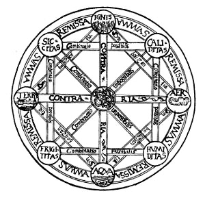
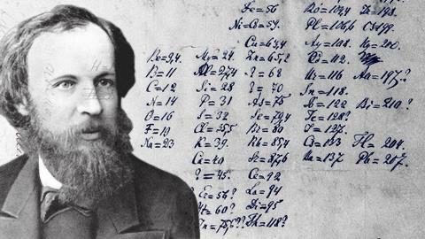
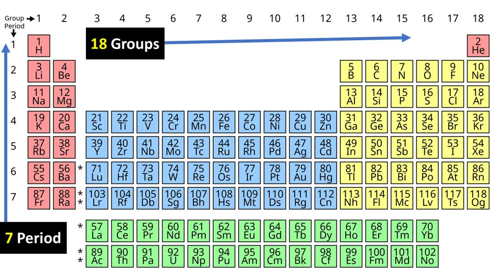
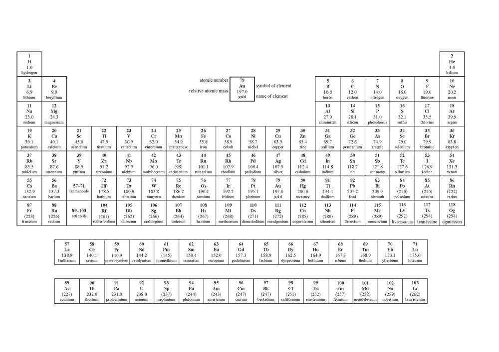
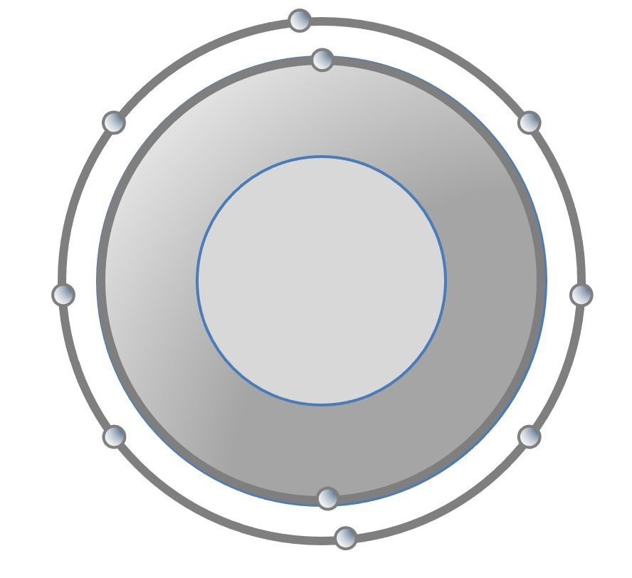

4.1 The Periodic Table
Many elements are found naturally, and a few can be made in laboratories. The universe is mostly hydrogen and helium; all the other elements are created in the centres of stars, which act like huge chemical factories. Stars make elements by fusion. When very large stars explode in a supernova, the heavy elements are formed. On Earth, scientists can create new elements using nuclear reactors or particle accelerators.
The ancient Greeks believed that everything was made of four elements: earth, air, fire and water. This idea lasted for over a thousand years. By the mid-1800s more than 60 elements were known, and the challenge was arranging them to show patterns in their properties.


In the 1860s, the Russian chemist Dmitri Mendeleev created the first periodic table by arranging cards for each known element. His arrangement was the foundation of the modern periodic table, which is still a cornerstone of chemistry today.
The modern periodic table organises elements using three key principles:
- Increasing atomic number. Elements are ordered by increasing atomic number (the number of protons), which is unique to each element.
- Similar atomic structures. Elements with similar atomic structures and properties are grouped together, highlighting recurring patterns in their behaviour.
- Chemical properties and groups. Elements with similar chemical properties are placed in vertical columns called groups, making it easier to spot trends and predict how an element will behave from its position.
Groups and periods
Periods are the horizontal rows of the periodic table. Elements in the same period have the same number of electron shells. They don't necessarily have similar properties, but their atomic number increases from left to right, and their properties change gradually across the period.
Groups are the vertical columns. Elements in the same group have similar chemical properties because they have the same number of electrons in their outer shell. Some groups have names, such as the alkali metals (Group 1) and the noble gases (Group 18).
The group number predicts the number of valence electrons: Group 1 elements have one valence electron, Group 13 elements have three, and so on. This simple rule does not apply to the transition metals.

4.2 The Modern Periodic Table
On a printed periodic table, label or shade these features:
- metals, non-metals and metalloids
- periods and groups
- lanthanides and actinides
- alkali metals, alkaline earth metals and transition metals
- halogens and noble gases.

Match each family with where it is found on the periodic table.
Elements are arranged by increasing atomic number. Neutral atoms have equal numbers of protons and electrons. Group 2 elements have 2 outer electrons, not 2 shells. Isotopes mean that atoms of one element can have different masses.
4.3 Periodic Table Questions
| Position | Element |
|---|---|
| Period 3, Group 2 | |
| Period 2, Group 15 | |
| Period 1, Group 18 | |
| Period 3, Group 17 |
- are gases at room temperature
- are liquids at room temperature
- are in Group 15
- are in Period 2
- are chemically similar to chlorine
- would have larger atoms than those of oxygen
- e.g. hydrogen, nitrogen, oxygen, fluorine, chlorine, helium, neon, argon
- Only two elements are liquids at room temperature: bromine and mercury
- nitrogen, phosphorus, arsenic (also antimony, bismuth)
- any three of lithium, beryllium, boron, carbon, nitrogen, oxygen, fluorine, neon
- other halogens (Group 17): fluorine, bromine, iodine
- any element with more shells than oxygen (Period 3 or below), e.g. sodium, sulfur, potassium
Use 13–18 for the group numbers.
| Al | B | N | O | P | S | |
|---|---|---|---|---|---|---|
| Period | ||||||
| Group number | ||||||
| Atomic number | ||||||
| Electrons in one atom | ||||||
| Electron configuration | ||||||
| Outer-shell electrons |
Which of the six elements above would you expect to have similar properties? Why?
Aluminium and boron (both Group 13, 3 outer electrons), nitrogen and phosphorus (both Group 15, 5 outer electrons), and oxygen and sulfur (both Group 16, 6 outer electrons). Elements in the same group have the same number of outer shell electrons, so they react in similar ways.
| Atom | Electrons |
|---|---|
| An atom with 6 protons | |
| An atom with atomic number 17 | |
| An atom in Period 2, Group 3 (13) | |
| An atom in Period 3, Group 15 | |
| A potassium atom | |
| A sulfur atom |
Strontium, atomic number 38, is in the fifth period of the periodic table. It is a member of Group 2. An atom of strontium therefore has:
- electrons
- shells of electrons
- electrons in its outer shell
The image shows the electron arrangement of an atom.

- Write the electron configuration for the atom:
- i. Which group of the periodic table does the atom belong to? Group
ii. What name is given to this group?
- Name two other elements with a similar number of electrons in the outer shell: and
The atom has 2 electrons in the first shell and 8 in the second: 2, 8, which is neon. It has a full outer shell, like the other noble gases (argon, krypton, xenon, radon). Helium also has a full outer shell, but with only 2 electrons.
| Clue | Element |
|---|---|
| A halogen in Period 4 | |
| An alkaline earth metal in Period 2 | |
| My atomic number is twice the atomic number of oxygen | |
| My atomic number is half the mass number of krypton | |
| My atomic number is half the mass number of titanium | |
| My mass number is three times the atomic number of phosphorus | |
| My mass number is the sum of the atomic numbers of boron and silicon | |
| My atomic number is 1/3 of the atomic number of zinc | |
| An alkali metal with 3 shells of electrons |
Oxygen is 8, so 16 is sulfur. Krypton's mass number is 84, so 42 is molybdenum. Titanium's mass number is 48, so 24 is chromium. Phosphorus is 15, so a mass number of 45 is scandium. Boron (5) + silicon (14) = 19, the mass number of fluorine. Zinc is 30, so 10 is neon.
- How many electrons can fill the 4th shell?
- How many protons are located in the second shell?
- Which group has all atoms with a complete outer shell? Group
- Name the two elements that are liquids at room temperature: and
- Elements in the same group have similar .
- Which element has 2 outer shell electrons:
- How many elements are in the 2nd period?
Protons are only found in the nucleus, never in electron shells, so the answer to (b) is 0.